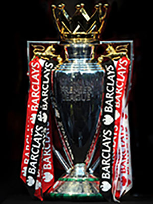
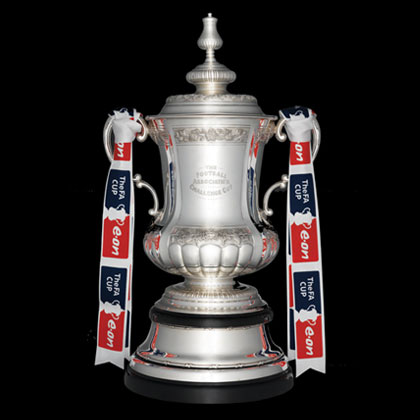
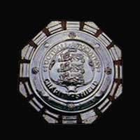
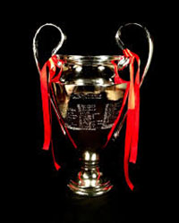

<< Back to previous page
Achievement

Domestic
The first honour is FA cup in season 1929-1930. Since that time, the club have achieved a lots honours including Premier League, FA cup and Community Shield.
| Honour | Cup | Quantity | Season |
|---|---|---|---|
| Premier League |  | 13 | 1930–31, 1932–33, 1933–34, 1934–35, 1937–38, 1947–48, 1952–53, 1970–71, 1988–89, 1990–91, 1997–98, 2001–02 and 2003–04 |
| FA Cup |  | 12 | 1929–30, 1935–36, 1949–50, 1970–71, 1978–79, 1992–93, 1997–98, 2001–02, 2002–03, 2004–05, 2013–14 and 2014–15 |
| Community Shield |  | 14 | 1930, 1931, 1933, 1934, 1938, 1948, 1953, 1991, 1998, 1999, 2002, 2004, 2014 and 2015 |
European
Althought the club achieved a lots honours in England, in European the honours achieved are very limited with only one cup in season 1993-1994.
